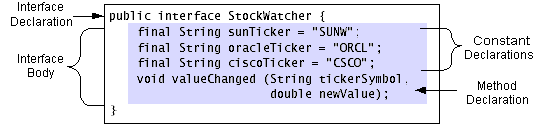
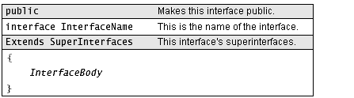

Feedback Form
|
|
Start of Tutorial > Start of Trail > Start of Lesson |
Search
Feedback Form |
The figure below shows that an interface definition has two components: the interface declaration and the interface body. The interface declaration declares various attributes about the interface, such as its name and whether it extends other interfaces. The interface body contains the constant and the method declarations for that interface.
 TheStockWatcherinterface and the structure of an interface definition.public interface StockWatcher { final String sunTicker = "SUNW"; final String oracleTicker = "ORCL"; final String ciscoTicker = "CSCO"; void valueChanged(String tickerSymbol, double newValue); }The interface shown in the figure above is the
StockWatcherinterface mentioned previously. This interface defines three constants, which are the ticker symbols of watchable stocks. This interface also declares, but does not implement, thevalueChangedmethod. Classes that implement this interface provide the implementation for that method.The Interface Declaration
The following figure shows all possible components of an interface declaration.
 The possible components of an interface declaration and their purposes.Two elements are required in an interface declaration--theinterfacekeyword and the name of the interface. Thepublicaccess specifier indicates that the interface can be used by any class in any package. If you do not specify that your interface is public, your interface will be accessible only to classes that are defined in the same package as the interface.An interface declaration can have one other component: a list of superinterfaces. An interface can extend other interfaces, just as a class can extend or subclass another class. However, whereas a class can extend only one other class, an interface can extend any number of interfaces. The list of superinterfaces is a comma-separated list of all the interfaces extended by the new interface.
The Interface Body
The interface body contains method declarations for all the methods included in the interface. A method declaration within an interface is followed by a semicolon (
;) because an interface does not provide implementations for the methods declared within it. All methods declared in an interface are implicitlypublicandabstract.An interface can contain constant declarations in addition to method declarations. All constant values defined in an interface are implicitly
public,static, andfinal.Member declarations in an interface disallow the use of some declaration modifiers; you cannot use
transient,volatile, orsynchronizedin a member declaration in an interface. Also, you may not use theprivateandprotectedspecifiers when declaring members of an interface.
Note: Previous releases of the Java platform allowed you to use theabstractmodifier on interface declarations and on method declarations within interfaces. However, this is unnecessary, because interfaces and their methods are implicitly abstract. You should not useabstractin your interface declarations or in your method declarations within interfaces.
|
|
Start of Tutorial > Start of Trail > Start of Lesson |
Search
Feedback Form |
Copyright 1995-2004 Sun Microsystems, Inc. All rights reserved.